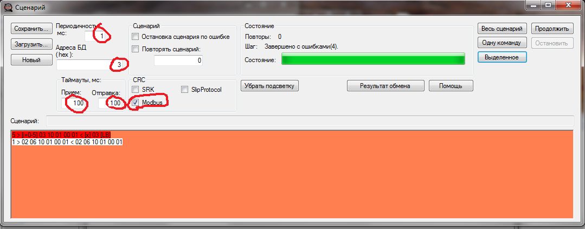
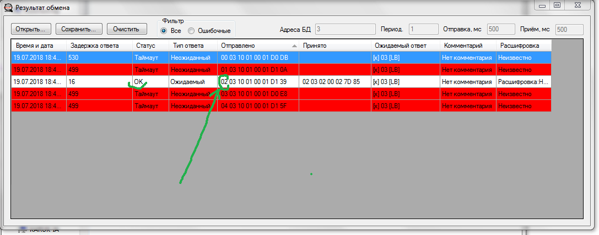

943-й адаптер интерфейсный(Сало). Прошивка
Схема принципиальная
Что дорабатывать в старых платах
Плата с доработкой
{kind=link}
{kind=link}
{kind=link}

- Подключить плату программатора: BLS разъем к плате адаптера, mini-USB к компьютеру
- К плате адаптера подключить питание 12V: 1(-) 2(+)
- Открыть STM32 ST-Link
- Target ⟶ Connect
- Target ⟶ Program & Verify
- Выбрать прошивку 943/adapter.hex (13.07.17)
- После прошивки на плате загорится второй красный светодиод

Подключение и настройка

- К 5-х колодке подключается 1123
- бел-кор-жел-зел-экр (желтый и зеленый подключаются наоборот!)
- Питание+ (коричневый) на 5х колодке НЕ ПОДКДЮЧАЕТСЯ!! на 1123 приборе будут сбои на адаптере. Запитывать от преобразователя!
- бел-кор-жел-зел-экр-сер-роз
- СРК с 943-им подключается к компу с помощью SARK2_PXR Через Sark PXR нельзя ни посмотреть адрес адаптера, ни установить желаемый. Для этих целей необходимо воспользоваться программой CAT32.
- Запустить CAT32_БАРК (/bin/release/Connections_automatic_tester.exe)
- Выбрать порт и следующие настройки:
- В окне Сценариев установить следующие параметры 
- Для того, чтобы узнать, какой адрес адаптера, нужно ввести такую команду: 256 > [i=0-255] 03 10 01 00 01 < [x] 03 [LB]
- В поле сценариев скопипастить команду и нажать кнопку "Одну команду"
- В окне "Результат обмена" появится такой список: 
- Одна из строк будет белой и с индификатором "ОК", это значит, что на запрос этого адреса адаптер ответил, остается посмотреть, какой адрес вызывался (на картинке стрелкой указано, где), на картинке это цифра 02, значит у адаптера второй адрес
- Для того, чтобы поменять адрес адаптеру, например со второго на первый, ввести такую команду: 1 > 02 06 10 01 00 01 < 02 06 10 01 00 01
- Вот такой будет ответ:
- (Рисунок)
- Здесь можно посмотреть список всех команд для Cat32
- После того, как будут заданы все адреса, все адаптеры подключаются через SARK2 PXR
- В окне администратора нажать поиск
- выбрать адаптер назначить ему пороги и нажать сохранить

(Иногда необходимо проверить только, например 5 адресов (когда точно известно, что адрес не больше пяти, но при этом не хочется ждать перебора всех 256-и адресов), тогда команда будет такой:
5 > [i=0-5] 03 10 01 00 01 < [x] 03 [LB]
)